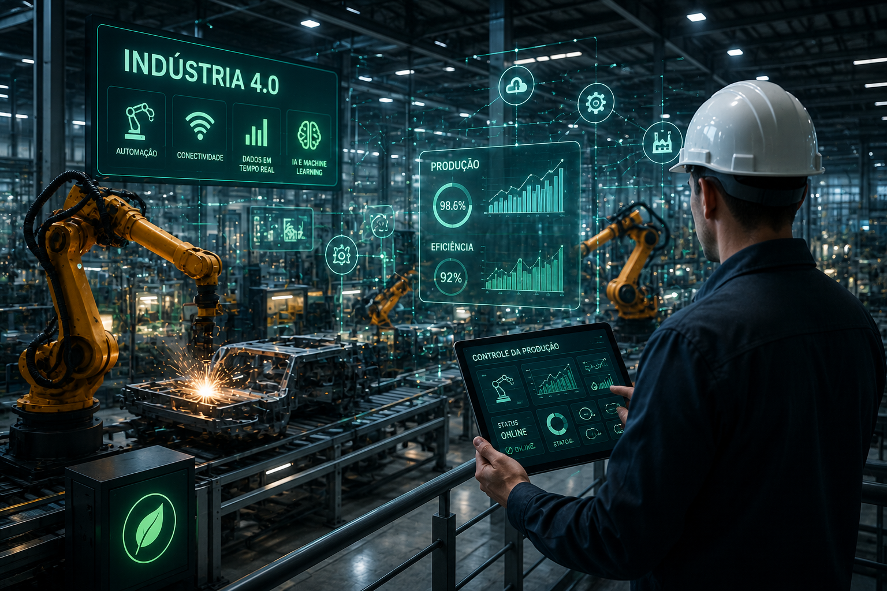

Robôs, sensores e análise de dados aumentam produtividade e qualidade.
A Indústria 4.0 representa a quarta revolução industrial, caracterizada pela integração de tecnologias como inteligência artificial, robótica, Internet das Coisas (IoT), computação em nuvem e análise de dados. Essas inovações permitem que máquinas e sistemas trabalhem de forma conectada, aumentando a produtividade, reduzindo desperdícios e tornando os processos industriais mais sustentáveis.
Robôs automatizam tarefas repetitivas e perigosas, aumentando a precisão da produção e garantindo maior segurança aos trabalhadores.
Sensores conectados monitoram máquinas em tempo real, permitindo identificar falhas e otimizar o funcionamento das fábricas.
Sistemas inteligentes analisam grandes volumes de dados para prever demandas, reduzir custos e melhorar a tomada de decisões.
Aumento da produtividade com automação industrial.
Redução do desperdício de matéria-prima.
Monitoramento contínuo das máquinas e processos.